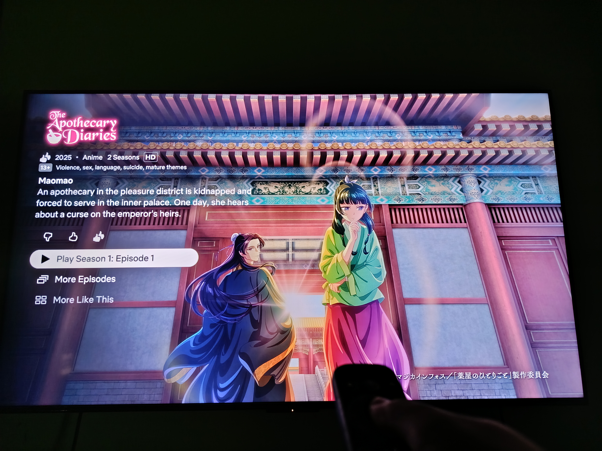
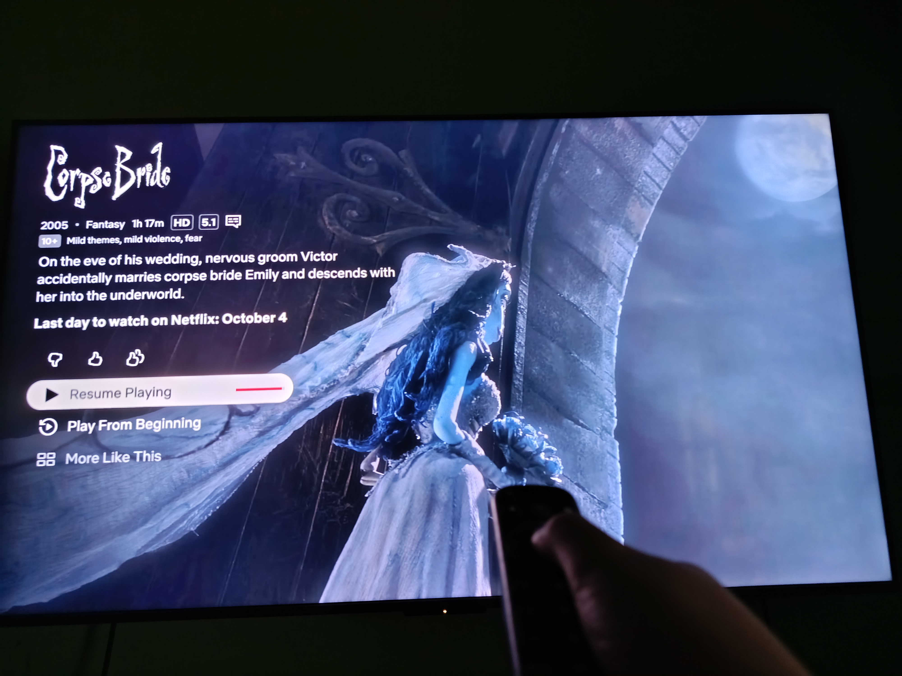

The Apothecary Diaries
The Apothecary Diaries is a historical mystery that follows Maomao, a witty apothecary who unravels palace intrigues with her sharp mind and knowledge of medicine. I love it because it mixes clever mysteries with the richness of a historical setting, making every chapter feel like solving a puzzle in another world.

Corpse Bride
Tim Burton’s Corpse Bride is a gothic fairytale brought to life through enchanting stop-motion, weaving together dark charm and bittersweet beauty. I love it because of its stunning animation and storyline, which make the story feel magical and unforgettable.